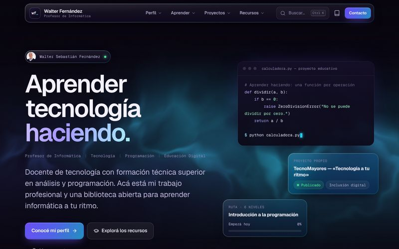

Proyecto destacado · Educativo y tecnológico
En desarrolloPlataforma educativa abierta
La diseñé y la desarrollé para que mis estudiantes —y cualquier persona— tengan apuntes, rutas de aprendizaje, ejercicios, proyectos y herramientas de IA en un solo lugar, a su ritmo.
- Desarrollo web al servicio de la enseñanza
- Diseño de materiales y recorridos
- Accesibilidad y uso desde el celular
HTML · CSS · JavaScript · Git/GitHub